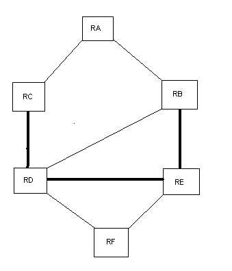

Torna alla pagina di Sistemi per l'elaborazione delle informazioni
:: Temi d'esame di Sistemi - 20/06/2006 ::
Esercizio 1
Scrivete lo pseudocodice includendo chiamate alla socket library necessarie per realizzare un semplice SMTP client con i seguenti requisiti:
- Dalla linea di comando, leggete il nome del server SMTP da usare e quello del vostro utente di posta. Create un socket e collegatelo alla porta corretta [suggerimento: usate le chiamate getservbyname, gethostbyname, socket, connect].
- Iniziate il colloquio con il SMTP server remoto usando gli opportuni messaggi per richiedere la posta. Specificate esplicitamente la richiesta
- Leggete i dati dalla connessione e salvateli su un file temporaneo creato nella vostra WWW cache (e.g., /usr/yourloginname/mailbox) sul computer locale
- Lanciate il processo di un viewer per mostrare a video il file (suggerimento: usate [fork/exec].
SOLUZIONE
CLIENT SMTP
#include# ...
1)Server=argv[1], utente = argv[2]
2)creazione socket sock
3)srvdata.ip=gethostbyname(server)
//nome del server che c'è sulla linea di comando
srvdata.port=25
//valore interno da convertire in big-endian
4)connect(sock, srvdata)
5)rcv(sock, msg)
//controllo che il codice msg del server sia 220 altrimenti esco
6)send(sock, "Helo 250 mioclient.it")
7)rcv(sock, msg)
//controllo che msg del server sia 250 altrimenti esco
8)send(sock, "MAIL FROM" + utente + "@mioclient.it")
9)rcv(sock, msg)
//controllo che msg del server sia 354 altrimenti esco e cacca forte
10)apro il file che contiene il messaggio di posta, descrittore fp
11)for(n=1; n>0; n= msg read(fp, buffer, EOM))
//leggo il prossimo messaggio
12){send(sock,buffer)
13)send(sock,".")}
14)close(sock)
Esercizio 2
Sun XDR converte i dati nello standard big-endian prima di trasmetterli. Per quale motivo si fa? Esistono soluzioni alternative?. Mostrare in cosa consiste la conversione attraverso un esempio.
SOLUZIONE
I dati possono essere big-endian e little-endian, questi due standard consistono in un differente ordinamento dei byte. Little-endian ordina prima i byte meno significativi (ex: 12.40.119.128) mentre big-endian ordina prima i byte più significativi (ex: 128.119.40.12).
Un host può utilizzare entrambi gli ordinamenti, mentre la rete utilizza solo l’ordinamento big-endian quindi è necessario fare una conversione nell’ordine dei byte della rete prima di trasmettere (Marshalling) e un'altra conversione nel momento della ricezione(Unmarshalling). Questo processo si può schematizzare in questo modo: marshalling --> trasmissione --> ricezione --> unmarshalling
NOTA: se una macchina è già big-endian queste conversioni non fanno nulla.
Vedi slide DAM_U4_U1_L5
Esercizio 3
Con riferimento alla topologia in figura, mostrate la completa costruzione delle tabelle di instradamento RIP. Dopo quanti round si conclude l'algoritmo?
Nota:nell'immagine del prof quelle 3 righe sono più scure, ma non ho capito se è un caso o se ha un certo significato. Presumibilmente sono backbone, specie di "corsie preferenziali", ma qui è inutile saperlo perchè tanto sono tutti collegati tra loro sti nodi.

SOLUZIONE
Le tabelle finali sono:
destinazione -> passo successivo -> costo
Tabella finale di RA:
RB -> RB -> 1
RC -> RC -> 1
RD -> RB -> 2
RE -> RB -> 2
RF -> RB -> 3
Tabella finale di RB:
RA -> RA -> 1
RC -> RA -> 2
RD -> RD -> 1
RE -> RE -> 1
RF -> RE -> 2
Tabella finale di RC:
RA -> RA -> 1
RB -> RA -> 2
RD -> RD -> 1
RE -> RD -> 2
RF -> RD -> 2
Tabella finale di RD:
RA -> RC -> 2
RB -> RB -> 1
RC -> RC -> 1
RE -> RE -> 1
RF -> RF -> 1
Tabella finale di RE:
RA -> RB -> 2
RB -> RB -> 1
RC -> RD -> 2
RD -> RD -> 1
RF -> RF -> 1
Tabella finale di RF:
RA -> RD -> 3
RB -> RE -> 2
RC -> RD -> 2
RD -> RD -> 1
RE -> RE -> 1
- al passo zero della tabella di ciascuno conosco solo il mio router da cui parto
- al passo 1 RA riceve i messaggi dai suoi vicini RB e RC e costruisce la sua tabella sulle loro. E così fanno tutti i nodi, ricevono tabelle dai vicini
- al passo 2 RA riceverà la tabella aggiornata di RB e RC con i cammini di RD e RE aggiornati. Altrettanto sarà per gli altri. Riceveranno quindi i messaggi dei loro vicini di due nodi più in là.
- al passo 3 RA riceverà la tabella di RB e RC aggiornata ad RF, l'ultimo rimasto. E così gli altri nodi.
L'algoritmo si conclude in 3 passi e sono tutti felici e contenti. A questo punto scrivo le tabelle richieste dall'esercizio per ciascun nodo.
Domande:
- Un utente vi racconta di aver eseguito due upload dello stesso file su altrettanti server FTP remoti e che la dimensione del file dopo averlo caricato gli appariva diversa nei due casi. Il racconto per voi è credibile? per quale motivo?
- Spiegate il significato del tipo MX di record DNS
- Fate un esempio di query diretta al DNS usando il comando nslookup
SOLUZIONE
1.
E’ possibile che accada, ad esempio perché un file una volta viene uploadato correttamente, mentre l’altro è corrotto e quindi avranno dimensioni diverse.
Oppure se si è scelto una volta il trasferimento ASCII e l’altra il trasferimento binario.
2.
Il tipo Mx significa centrale postale e consiste nella preferenza a 16 bit e nel nome dell'host che funge da centrale postale per il dominio.
E’ assegnato ai nomi usati per le centrali postali elettroniche e consente ad un sito di specificare più host in grado di accettare la posta.
Quando si invia la posta elettronica, l’utente specifica un indirizzo di posta elettronica nella forma user@domain-part. Il sistema postale utilizza il sistema dei nomi di dominio per tradurre domain-part con il tipo di interrogazione MX (preso dal libro).
3.
Nslookup consente di effettuare delle query (richieste) ad un server DNS per la risoluzione di indirizzi IP o Hostname, per poter ottenere da un dominio il relativo indirizzo IP o nome host e viceversa. Si può utilizzare in due modi: interattivo e non interattivo.
Il primo permette di effettuare più query e visualizza i singoli risultati.
Ex:
C:\>nslookup
>www.google.it
Nome: www.1.google.com
Addresses: 66.249.85.104, 66.249.85.99
Aliases: www.google.it, www.google.com
Il secondo permette di effettuare una sola query e ovviamente visualizza il risultato della singola query.
Ex:
C:\>nslookup
Server: localhost
Address: 192.168.0.19
>www.google.it
Risposta da un server non di fiducia:
Nome: www.1.google.com
Addresses: 66.249.85.104, 66.249.85.99
Aliases: www.google.it, www.google.com
(da Wikipedia)
Torna alla pagina di Sistemi per l'elaborazione delle informazioni